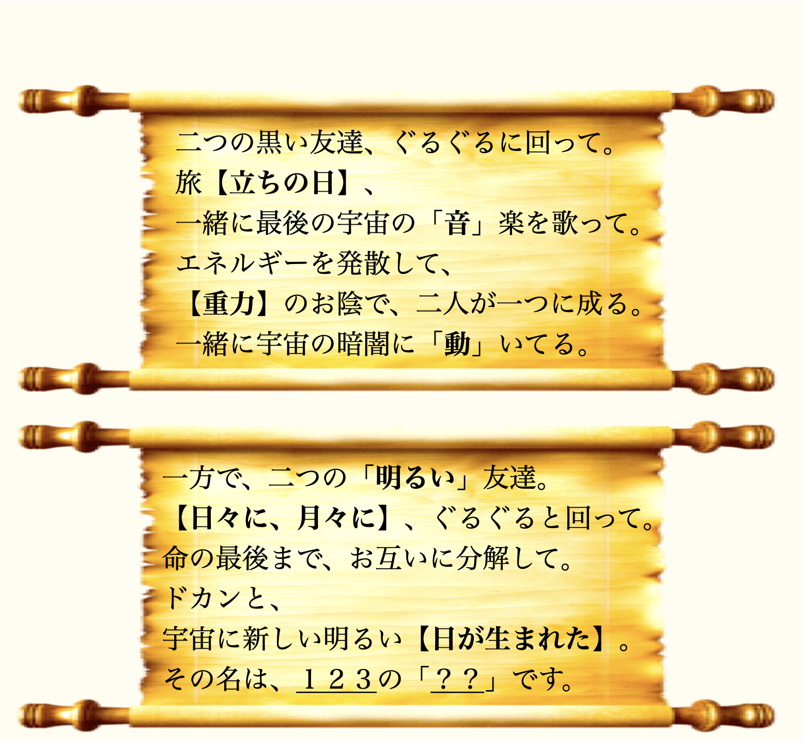

東京大学・本郷キャンパス。
ビッグバン宇宙研究センター（RESCEU）の夜は静かだった。
廊下の奥では、仲間たちが観測データを解析し、
“宇宙の音”をノイズの海から丁寧にすくい上げている。
🔭《宇宙で一番優しい音》第7話 希望の星（きぼうのほし）

……これが重力波の“波形データ”？

阿笠博士
そうじゃ。ここRESCEUでは観測所から届いたデータを分析して、
宇宙の“声”を聞き取っておる。

コナン
……ん？ 白いカードが落ちた。
💌 怪盗キッドの予告状
───怪盗キッドより───
「日々に、月々に。
二つの光が重なり、新しい“日”が生まれる時――
その名は、“１２３の？？”。」


📘 ルール説明
- ① 三段の図（数字「1・2・3」に対応）を読み解く。
- ② 巻物の対応式から「？？」に入る言葉を見つける。
①で“1・2・3”が示す「音」を取り出し、②で対応式を解読する。
二つを正しく組み合わせると、カードの言う「新しい日が生まれる時」の意味に辿り着く。答えは、「＿ ＿ ＿ の ＿ ＿」、平仮名で。